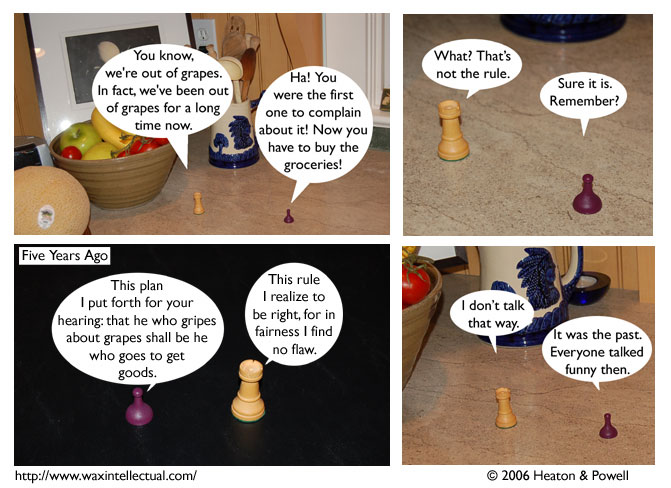

Strip #1
— Monday, June 12, 2006
pay no attention to the bowl of fresh fruit behind them
Notes, Thoughts, &c.
Ben’s Notes
This was the first Terror Island strip we made. It’s hard to believe we’ve come so far since then, isn’t it? The area Sid and Stephen are standing on in most of the strip is a kitchen counter, but I used a card table for the panel three flashback.
Lewis’s Notes
I think this work speaks for itself.
However, I will note that I added “RSS:Pect” and “Oh No Robot” features for all you crazy kids out there. I also avoided the “border” attribute of images, because apparently it doesn’t exist, and I wanted the site to validate.
Because I care.